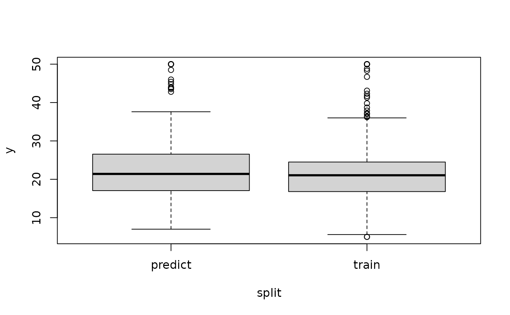

Creates a split of the row ids of a Task into a training set and a test set while optionally stratifying on the target column.
For more complex partitions, see the example.
Usage
partition(task, ratio = 0.67, stratify = TRUE, ...)
# S3 method for TaskRegr
partition(task, ratio = 0.67, stratify = TRUE, bins = 3L, ...)
# S3 method for TaskClassif
partition(task, ratio = 0.67, stratify = TRUE, ...)Arguments
- task
(Task)
Task to operate on.- ratio
(
numeric(1))
Ratio of observations to put into the training set.- stratify
(
logical(1))
IfTRUE, stratify on the target variable. For regression tasks, the target variable is first cut intobinsbins. SeeTask$add_strata().- ...
(any)
Additional arguments, currently not used.- bins
(
integer(1))
Number of bins to cut the target variable into for stratification.
Examples
# regression task
task = tsk("boston_housing")
# roughly equal size split while stratifying on the binned response
split = partition(task, ratio = 0.5)
data = data.frame(
y = c(task$truth(split$train), task$truth(split$test)),
split = rep(c("train", "predict"), lengths(split))
)
boxplot(y ~ split, data = data)

# classification task
task = tsk("pima")
split = partition(task)
# roughly same distribution of the target label
prop.table(table(task$truth()))
#>
#> pos neg
#> 0.3489583 0.6510417
prop.table(table(task$truth(split$train)))
#>
#> pos neg
#> 0.3495146 0.6504854
prop.table(table(task$truth(split$test)))
#>
#> pos neg
#> 0.3478261 0.6521739
# splitting into 3 disjunct sets, using ResamplingCV and stratification
task = tsk("iris")
task$set_col_roles(task$target_names, add_to = "stratum")
r = rsmp("cv", folds = 3)$instantiate(task)
sets = lapply(1:3, r$train_set)
lengths(sets)
#> [1] 99 99 102
prop.table(table(task$truth(sets[[1]])))
#>
#> setosa versicolor virginica
#> 0.3333333 0.3333333 0.3333333